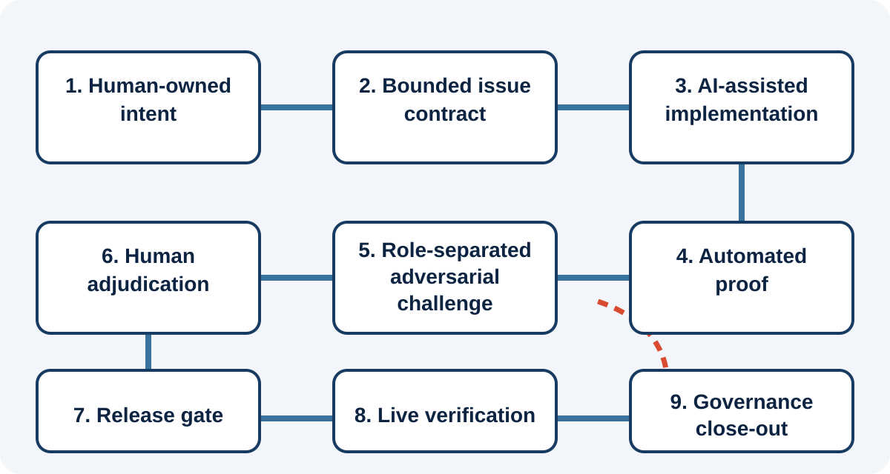
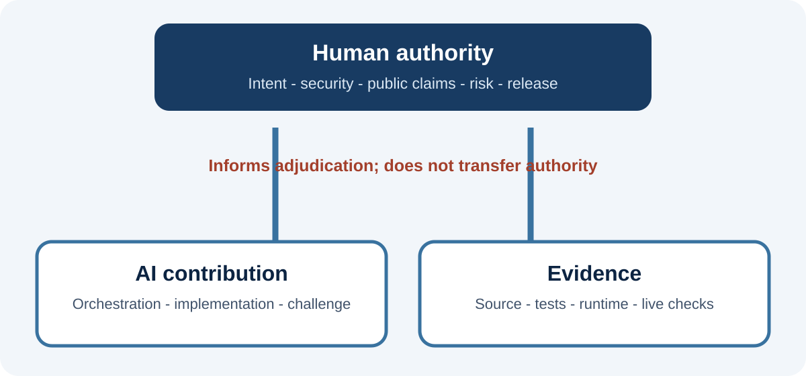
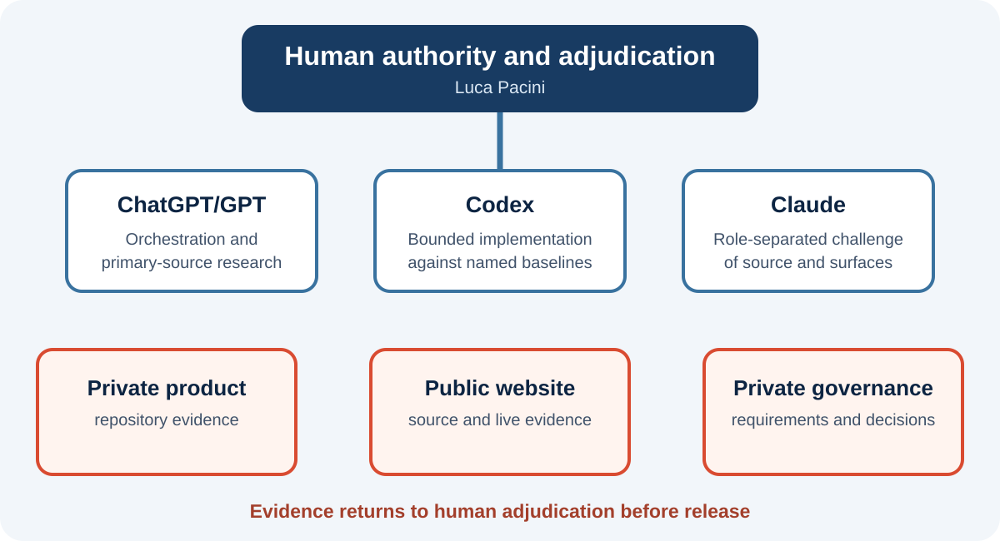

Requirement and scope
Requirement invention fills missing authority with statistical expectation. Scope laundering introduces product changes as tidy-up or best practice.
Evidence-gated delivery
A Fortmilo engineering-methodology publication about human authority, evidence gates and multi-model engineering.
Version 1.0 accessible edition - Current
| Field | Value |
|---|---|
| Author | Luca Pacini |
| Publisher | Fortmilo |
| Version | 1.0 accessible edition |
| Status | Current |
| Publication date | 30 August 2026 |
| Bounded case study | Security Observatory. It is used only as an engineering case study; this publication makes no claim that Security Observatory contains, offers or depends on AI product capabilities. |
| Method status | Derived from one bounded project; not independently replicated or validated as a general delivery standard. |
| Document licence | CC BY 4.0 for Fortmilo-authored text and figures, subject to third-party material and trademark boundaries. |
AI may extend delivery capacity; it does not acquire delivery authority.
Small software projects make architectural, security, quality and release decisions comparable in consequence to those made by larger teams, but cannot reproduce the same division of labour. Generative artificial intelligence can reduce some of that capacity constraint by accelerating research, drafting, implementation, test construction, documentation and review. Used without an explicit control model, the same capability can amplify error.
This paper presents evidence-gated AI-assisted delivery, a human-governed method for small security-sensitive software projects. Humans retain ownership of intent, security boundaries, public claims and release decisions. AI systems operate within bounded task contracts. Automated checks establish reproducible evidence. Role-separated adversarial challenge exposes assumptions, but model or provider separation is not represented as independent third-party assurance.
The method uses nine linked states: human-owned intent and constraints; a bounded issue contract; AI-assisted implementation; automated proof; role-separated adversarial challenge; human adjudication; a release gate; live verification; and governance close-out. Each transition requires explicit evidence.
Security Observatory is the bounded case study for the delivery method, not an AI-enabled product claim. The case study covers delivery across a private Salesforce product repository, a public website repository and private governance. The principal claim is narrow: AI-assisted delivery can be more governable when authority, evidence, baseline identity and uncertainty are represented explicitly.
A small software project is not merely a large project with fewer people. The same individual may define requirements, design the architecture, implement the change, review the code, write the tests, update documentation and decide whether to release. This concentration produces speed and continuity, but removes many natural challenge mechanisms.
Security-sensitive software sharpens the problem. A small change can alter authorisation, evidence retention, data exposure, deployment behaviour or the meaning of a customer-facing statement. A system that reports security posture must protect execution integrity and epistemic integrity: the maintained correspondence among what the system observed, what it retained, what the project verified and what any public artefact asserts.
AI assistance can restore missing capacity, but capacity is not accountability. A model does not bear the consequence of an insecure release, a misleading claim or a corrupted repository. It cannot inherit the owner's duty to decide what is acceptable.
How can a small project use AI intensively while keeping intent, evidence, accountability and release authority human-owned?
Informal AI use often means describing an outcome, accepting a plausible implementation, running a few tests and moving on. Security-sensitive work requires explicit answers to five questions:
Without those answers, a project can produce polished but weakly governed work. Common failures include requirement invention, scope laundering, evidence inflation, review convergence and false completion.
This paper contributes a practical governance method rather than a new model architecture or universal software-development lifecycle. It combines AI risk management, secure software development, human oversight and evidence-bounded release governance in a lightweight operating loop. The method works with ordinary issue trackers, Git repositories, automated tests, static validation, web research and human review.
The method is intended for small software products and reference implementations where one person or a small team owns architecture and delivery; AI assists with research, drafting, coding, testing or review; security, privacy or customer-trust claims matter; repository history and release artefacts exist; and human release authority can be made explicit.
It is not a substitute for formal safety engineering, regulated validation, professional penetration testing, legal advice or independent certification.
| Term | Meaning |
|---|---|
| AI-assisted delivery | Use of a generative model or coding agent in research, design, implementation, test, documentation or review. |
| Human authority | The retained human power to define scope, approve exceptions, accept risk, make public claims and authorise release. |
| Task contract | A bounded statement of authorised work, exclusions, starting state, evidence requirements and stop conditions. |
| Evidence gate | A condition satisfied by inspectable evidence before work advances to the next delivery state. |
| Role-separated adversarial challenge | Review from a distinct delivery role, model/provider perspective, prompt or evidence set. It is a challenge mechanism, not third-party assurance. |
| Baseline identity | The repository, worktree, branch, expected commit and clean or dirty state under review. |
| Adjudication | Human resolution of disagreement, uncertainty or conflicting evidence. |
| Release evidence | Evidence tied to the exact candidate or deployed artefact. |
| Governance close-out | Updating requirements, issue state and retained evidence after live verification. |
The method is evidence-bounded: source inspection, automated test, runtime observation and live deployment checks remain distinct evidence classes. It is human-governed: authority is embedded where intent, security boundaries, public claims and release risk are decided. It is proportionate: control concentrates at task authorisation, sensitive data, adversarial challenge, release evidence and public claims.
Risk emerges from interaction among the model, prompt, tools, repository state, external services and human expectations. The relevant unit of control is the authorised interaction: what the model may see, what it may change, what evidence it must produce and what decisions remain outside its authority.
Requirement invention fills missing authority with statistical expectation. Scope laundering introduces product changes as tidy-up or best practice.
False completion ignores deployment or visual acceptance. Evidence inflation promotes source or fixture observations. Review correlation mistakes repeated framing for confirmation.
Generated weaknesses, sensitive-data disclosure, automation bias, context collision and operator fatigue can redirect correct work into the wrong authority or evidence boundary.
Language models can identify superficial problems in their own output, but reliable reasoning correction generally requires external feedback.[10] Empirical work has also found security weaknesses in generated code in public repositories.[9] Domain experts can accept improper automated suggestions and take less initiative,[11] while explanations do not reliably reduce automation bias and can increase it.[12]
Several models can improve challenge coverage, but plurality is not assurance unless roles and evidence are separated. Different providers may still share public material, reasoning patterns or the same mistaken project framing. The human adjudicator resolves results against source, tests, runtime evidence or authoritative external material.

Figure 1. Each transition is gated by the minimum evidence for the target state; challenge and adjudication may return work to an earlier state.
The sequence is not a rigid waterfall. Feedback may return work to an earlier state, but each transition remains explicit and evidence-gated.

Figure 2. Human authority, AI contribution and evidence remain separate.
The human owner controls intent, architecture, security boundaries, risk acceptance, legal and public wording, visual acceptance and release. In the case study this role was held by Luca Pacini.
A general-purpose model can translate decisions into bounded tasks, compare findings, research primary sources and maintain a view across repositories. ChatGPT/GPT primarily served this role. Current state was re-read from canonical requirements, GitHub or the live web when it mattered.
The implementation role converts a bounded requirement into source changes, tests and validation evidence. Codex primarily served this role against explicitly identified product and website baselines. A successful implementation report did not constitute deployment proof.
Claude and Claude Code were used to challenge technical, customer-facing and publication claims. This increased the chance of finding different errors, but did not create professional third-party assurance.
Tests, validators, build checks, checksums and HTTP checks supplied reproducible observations. Official sources and the public web supplied external evidence. Each source proved only the condition actually exercised.
The method is vendor-neutral even though the case study names its tools. What must survive tool changes is separation among authority, contribution, challenge and evidence.
A task contract reduces ambiguity before work begins and makes review objective by comparing the candidate with an authorised specification rather than inferred intention.
| Element | Required content |
|---|---|
| Requirement anchor | Issue, requirement or owner-decision identifier. |
| Repository identity | Repository, worktree and source boundary. |
| Starting baseline | Branch, expected commit and clean or dirty condition. |
| Objective | The smallest complete outcome. |
| In scope | Authorised files, behaviours and artefacts. |
| Out of scope | Prohibited changes and deferred work. |
| Security boundaries | Secrets, data, authorisation and remediation restrictions. |
| Evidence requirements | Tests, validators, runtime checks and artefact integrity. |
| Stop conditions | Wrong repository, unrelated changes, missing source, divergent baseline or absent authority. |
| Publication rules | Commit, push, review, release and live-verification gates. |
Exclusions matter because models tend to complete patterns. A removed card may be replaced because a layout looks incomplete; a newly available slot may acquire an unverified claim. A stop condition protects the project from operating on the wrong state and should preserve that state while reporting the blocker.
| Evidence class | Meaning | Permitted claim |
|---|---|---|
| Proposed | A change has been suggested. | May be considered; not implemented. |
| Source-established | Behaviour is visible in reviewed source. | Implemented in that source; runtime is not implied. |
| Test-observed | A controlled automated test exercised behaviour. | Observed under the stated fixture. |
| Runtime-observed | Behaviour occurred in a reviewed execution. | Observed in that execution and environment. |
| Release-validated | The exact candidate passed defined release gates. | Validated for that candidate and prerequisites. |
| Live-verified | The deployed artefact was checked after publication. | Present at the checked live boundary. |
| Supported | The project accepts behaviour in its product contract. | Supported within declared scope and prerequisites. |
| Expected | Required by design but not evidenced higher. | Expectation or release-gate requirement only. |
| No conclusion available | No reliable project-level evidence exists. | No positive or negative conclusion. |
Evidence cannot be silently promoted. Source does not become release validation because it looks straightforward. A local build does not prove a hosted page is live. One organisation does not establish universal compatibility.
The ladder classifies what the delivery project may claim about its work. It is not subscriber-facing Security Observatory vocabulary. The companion Evidence Semantics and Scanner Orchestration paper defines that separate presentation model.
Default prohibited context includes access and refresh tokens, session identifiers, client secrets, passwords, keys, certificate bodies, raw sensitive headers, production customer evidence, unnecessary personal data and attacker-useful diagnostics.
Agents receive only the repository, worktree and evidence required for the task. Product source, website source and governance remain distinct. Cross-tree reasoning is permitted only where required; cross-tree editing is not assumed.
An AI-assisted task may not introduce write-back actions, token revocation, permission removal, API blocking or endpoint modification into a product whose contract excludes them. Such changes require explicit owner authorisation, threat modelling and separate release evidence.
Assume prompts and tool output may persist. Exclude sensitive values before interaction rather than relying on later deletion.
Use authoritative sources for platform, security, standards and legal-adjacent claims. Search snippets identify leads, not load-bearing evidence. Live website observations prove only the checked public boundary; source inspection does not prove a cache, index or hosted page has updated.
A challenger tries to falsify claims: scope, baseline identity, prohibited states, test relevance, local-to-live promotion, customer wording and security boundaries.
Classify each finding as accepted defect, already tracked, deferred improvement, unsupported assertion, regression risk, new owner decision or leave alone. This prevents review from replacing the roadmap.
Another model may reduce direct self-review correlation but can share sources, assumptions or framing. Reserve the word independent for genuinely separate external assurance or replication.
Decompose disagreement into factual propositions and check current owner decisions, source, tests, runtime evidence or authoritative material. Where evidence remains incomplete, leave the result unresolved.
Layout balance, tone, diagram readability and customer credibility are not wholly reducible to automation. A manual visual gate is legitimate evidence when bounded to defined surfaces and recorded separately.
Case-study boundary. Security Observatory is used as a bounded software-delivery case study. It is not described as having AI product capabilities. AI tools contributed only to the engineering workflow under human authority.
Security Observatory is a Salesforce-native security evidence application with read-only assessment and no security remediation or write-back to assessed Salesforce configuration. Its delivery combines Salesforce architecture, security design, package engineering, evidence semantics, documentation, a public website, licensing and release governance.
| Delivery role | Implementation | Authority boundary |
|---|---|---|
| Owner, architect, adjudicator and release authority | Luca Pacini | Owns scope, security boundaries, wording, risk acceptance, visual acceptance and release. |
| Orchestration, synthesis and research | ChatGPT/GPT | Structures tasks, compares evidence and researches sources; it is not repository truth or release authority. |
| Bounded implementation and source inspection | Codex | Edits authorised source, creates tests and reports evidence against a named baseline. |
| Role-separated adversarial challenge | Claude and Claude Code | Challenges technical and public claims; findings require human adjudication. |
| Automated evidence | Tests, builds, validators, checksums and HTTP checks | Proves only the exercised condition on the exact candidate or checked surface. |
Numbered requirements, bounded GitHub issues, explicit statuses and retained owner decisions became authoritative state. Chat history and model memory remained convenient but lossy. Current canonical and repository state were re-read before implementation, review or status reporting.

Figure 3. Case-study orchestration across three evidence domains.
Repository identity was treated as an evidence boundary. Before material work, the expected repository, worktree, branch, HEAD and clean or dirty state were established. A model can reason perfectly about the wrong branch and still produce a useless answer. Departures from the expected tree required an explicit reason, commit identity and statement of included and excluded work.
Private source supports implementation and baseline identity, not live publication. Automated validation supports the exercised condition, not visual quality or universal support. Official sources support external claims, not private implementation. Public web checks support what a reader could retrieve at that time, not its private build history. Human adjudication supports accepted scope and risk, not otherwise unproved technical behaviour.
A completed website trace followed the full loop: approved public outcome; bounded source and validation rules; implementation on the current baseline; copy, navigation, metadata and prohibited-language checks; role-separated challenge; human visual acceptance; publication; live verification; and governance close-out.
Four product failures demonstrated the value and limits of challenge. EV-01 and EV-02 were false-zero paths after source acquisition failed. EV-03 lost a useful bounded cause from an exception. EV-04 could collapse a bounded retained-evidence read failure into an unexplained Unknown presentation. The method did not prevent the defects; challenge caught them and stopped favourable claims until the evidence changed.
Publication work exposed wrong or stale worktree assumptions, loss of editable source, wording broader than test evidence, reviewer scope capture, insufficient automated visual proof, out-of-sequence artefact and landing-page changes, and drift from current product vocabulary. Controls were hardened with baseline preflight, controlled source reconstruction, narrow claims, finding classification, explicit visual acceptance and separate artefact, link and live checks.
Several similar model chats, browser tabs, terminals and worktrees made operator context switching part of the threat model. The discipline became: name role and tree; check root, branch, HEAD and status; keep one tree write-enabled; label copied material by destination; and stop publication or writes when fatigue makes context uncertain.
The project did not deliberately supply secrets, access or refresh tokens, session identifiers, private keys, certificate bodies, raw customer evidence, attacker-useful diagnostics or autonomous remediation authority.
The case study does not prove greater speed, generalisation to larger teams, independence from model diversity or sufficiency of a human gate. It shows only that one technically experienced owner used AI intensively in an engineering workflow while keeping authority, evidence classes and release gates explicit.
Published evidence on AI-assisted programming varies by population, task, tool generation, outcome measure and date. Cui and colleagues report about 26 per cent more completed tasks across three field experiments.[14] METR reported that sampled experienced maintainers using early-2025 tools took about 19 per cent longer,[15] then cautioned in 2026 that newer-tool estimates were only weak evidence because of selection and measurement problems.[24] Song, Agarwal and Wen report project-level contribution and participation effects alongside increased coordination time.[16]
These studies are not commensurable. A small project should avoid a universal headline figure and instead ask whether work passes evidence gates and release authority within an accepted residual-risk boundary.
| Measure | What it tests | Misuse to avoid |
|---|---|---|
| Issue-to-live lead time | Delivery throughput | Ignoring rework or review debt. |
| Rework after challenge | First-pass quality and task clarity | Treating all challenge-driven change as failure. |
| Scope deviation count | Task-contract effectiveness | Rewarding under-delivery. |
| Escaped defect count | Release effectiveness | Comparing releases of different risk. |
| Evidence-gate failures | Whether controls are active | Treating blockers as wasted time. |
| Human review time | Governance cost | Assuming less is always better. |
| Unsupported-claim corrections | Epistemic quality | Hiding corrections to improve the metric. |
| Sensitive-data incidents | Boundary effectiveness | Ignoring near misses. |
| Live verification failures | Local-to-live fidelity | Omitting infrastructure factors. |
The useful outcome is not maximum generated code. It is correctly scoped, reviewable and releasable work completed without increasing residual risk beyond the accepted boundary.
Low-risk documentation may need a source diff, link checks and owner review. Changes to authorisation, sensitive data, package installation or public security claims require stronger evidence and exact-candidate validation.
Expand governance when customer or production data is processed, software changes customer security configuration, regulation applies, multiple teams contribute, deployment is autonomous or failure exceeds the owner's ability to absorb it.
NIST AI RMF and its Generative AI Profile address organisational AI risk.[1][2] NIST SSDF addresses secure software development, and SP 800-218A extends that guidance to AI model development and systems incorporating models.[3][4] UK secure-AI and AI cyber-security guidance treat security across the AI lifecycle.[5][6] The Software Security Code of Practice sets voluntary software-security principles,[8] and UK assurance guidance frames evidence for trustworthy claims.[7]
Goal Structuring Notation and the NCSC Assurance Principles and Claims express claims, arguments and evidence.[19][25] SLSA and in-toto address supply-chain provenance,[20][21] while this method establishes the repository, worktree, branch and commit actually used before work begins. ISO/IEC 42001 defines organisational AI-management requirements.[22] OWASP GenAI guidance covers threats in systems embedding generative AI; this paper covers a model as an engineering contributor whether or not the delivered system contains AI.[23]
Within the reviewed set, the instruments do not specify the same lightweight loop combining repository baseline identity, exclusions, evidence classes, role-separated challenge, human adjudication and live/publication verification for a small team. This is not a claim that no comparable practice exists or that the method is a new standard.
The method comes from one project with a technically experienced owner and may depend on architectural skill and security judgement.
Luca Pacini designed the method, is its only practitioner to date and adjudicated every disputed finding. Favourable project-specific statements are self-attested unless a public artefact or external source is identified. Stronger standing requires independent replication.
No controlled non-AI baseline exists, and the proposed measures have no reported values. The paper cannot quantify speed, cost or defect reduction attributable to AI assistance.
Capabilities, context windows, controls and data-governance terms change quickly. Express controls at role and evidence level, not permanently by product.
Human overseers can fail to correct model error and can introduce bias.[12][13] The case study's fatigue and wrong-context episodes show that operator state belongs in the threat model. A human gate is necessary, not sufficient.
Some case-study evidence remains in private repositories. Public readers cannot reproduce every source-established statement.
AI can expand the work a small software project can attempt only while delivery authority remains distinct from delivery capacity. A model may generate code, tests, prose, research and critique. It cannot inherit responsibility for scope, security, truth or release.
Evidence-gated delivery treats every transition as a claim requiring proof. Task contracts define authority and exclusions. Baseline identity identifies the software under review. Automated checks provide reproducible evidence. Role-separated challenge exposes assumptions without becoming third-party assurance. Human adjudication resolves uncertainty. Release and live verification establish exact-artefact state. Governance close-out preserves what remains unproved.
The Security Observatory case study adds a practical observation: multi-model orchestration is useful only when multi-tree provenance is explicit. Security Observatory remains the bounded case study and is not represented as an AI-capable product.
A small project can use AI intensively without allowing fluency, model consensus or automation success to replace human authority and evidence.
State the authoritative issue, requirement or owner decision.
State the smallest complete outcome.
List authorised behaviours, files and artefacts.
List prohibited changes, deferred items and adjacent work.
State prohibited secrets, data classes, authorisation changes, remediation actions and external egress.
List exact build, test, static, security, visual, package, runtime and live-verification requirements.
State when the agent must stop without modification.
State commit rules, push authority, release gate and live-verification sequence.
Require starting and ending state, changed-file tree, validation evidence, unresolved risks and final repository status.
Template only. No completed entries are published here; the case-study delivery evidence register is retained privately.
Fields: Claim; Scope; Evidence class; Artefact; Limitation; Next gate; Owner decision.
Version 1.0 accessible edition, 30 August 2026 - Current. Regenerated at the stable publication path with semantic tagging, document language, bookmarks, linked references, figure alternatives and embedded fonts. The previous PDF remains available through Git history only.
Author: Luca Pacini. Publisher: Fortmilo. Public location: United Kingdom.
Competing interests. The author is the founder and sole proprietor of Fortmilo. Security Observatory is the bounded case-study product, and this paper forms part of the Fortmilo publication surface. No external funding was received.
AI-use disclosure. Generative AI systems contributed research, synthesis, implementation in case-study repositories, document production and role-separated challenge under the authority model described here. The author adjudicated outputs and retains sole responsibility for the published claims.
Copyright 2026 Luca Pacini. Fortmilo-authored text and figures are licensed under Creative Commons Attribution 4.0 International. This does not relicense third-party trademarks, standards, publications or cited material.
Fortmilo is a Salesforce Partner. Partner status does not imply AppExchange listing, Salesforce Security Review, managed-package availability or endorsement. Security Observatory is independently developed and is not endorsed by Salesforce, Inc. Salesforce is a trademark of Salesforce, Inc.
This paper is not a certification, industry standard, third-party assurance report or universal productivity claim. It is a proposed engineering method derived from one bounded case study and the cited guidance and research.
Stable current URL: https://fortmilo.co.uk/documents/orchestrating-ai-for-secure-software-delivery.pdf